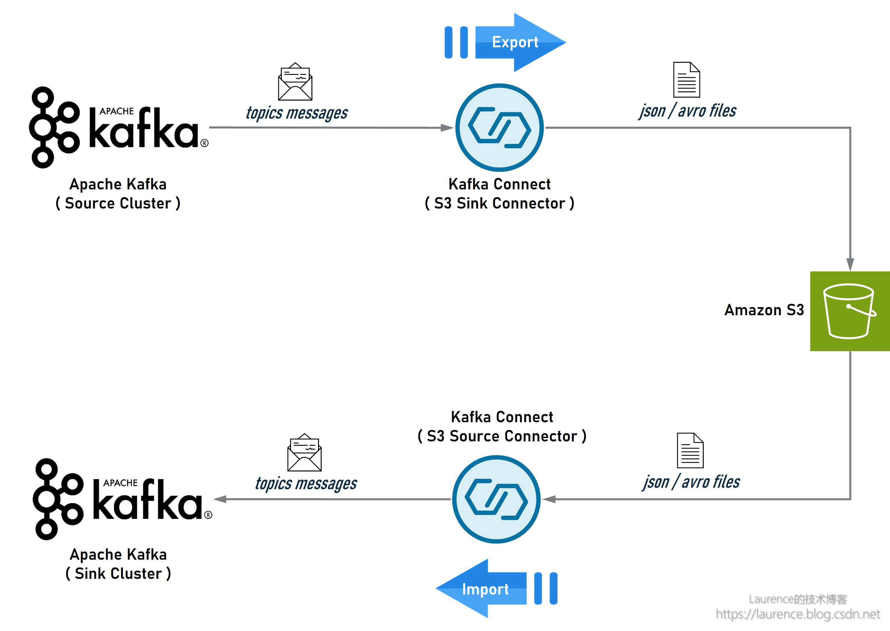
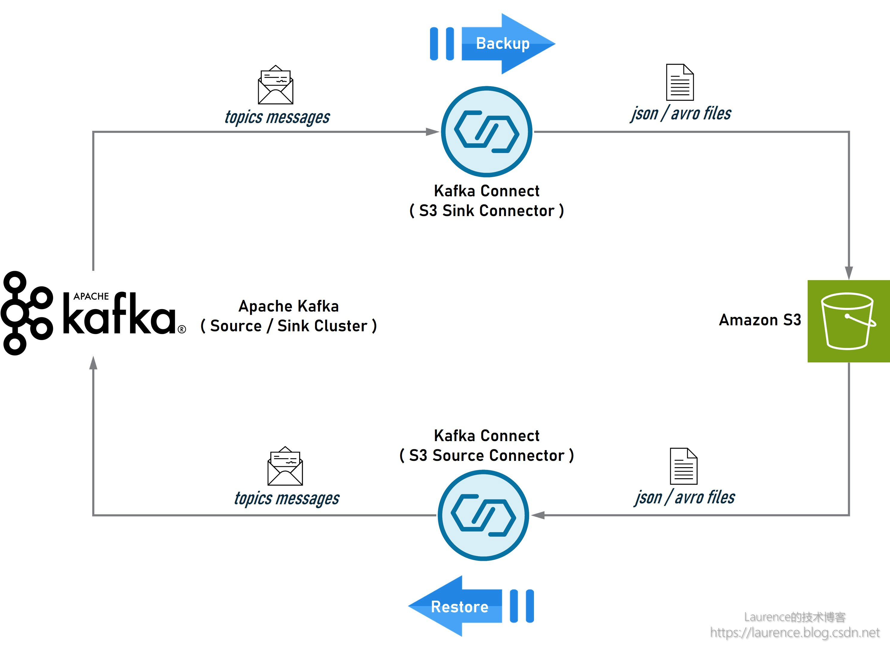

在系统升级或迁移时，用户常常需要将一个 Kafka 集群中的数据导出（备份），然后在新集群或另一个集群中再将数据导入（还原）。通常，Kafka集群间的数据复制和同步多采用 Kafka MirrorMaker，但是，在某些场景中，受环境限制，两个于 Kafka 集群之间的网络可能无法连通，亦或是需要将 Kafka 的数据沉淀为文件存储以备他用。此时，基于 Kafka Connect S3 Source / Sink Connector 的方案会是一种较为合适的选择，本文就将介绍一下这一方案的具体实现。数据的导出、导入、备份、还原通常都是一次性操作，为此搭建完备持久的基础设施并无太大必要，省时省力，简单便捷才是优先的考量因素。为此，本文将提供一套开箱即用的解决方案，方案使用 Docker 搭建 Kafka Connect，所有操作均配备自动化 Shell 脚本，用户只需设置一些环境变量并执行相应脚本即可完成全部工作。这种基于 Docker 的单体模式可以应对中小型规模的数据同步和迁移，如果要寻求稳定、健壮的解决方案，可以考虑将 Docker 版本的 Kafka Connect 迁移到 Kubernetes 或 Amamon MSK Connect，实现集群化部署。
1. 整体架构
首先介绍一下方案的整体架构。导出/导入和备份/还原其实是两种高度类似的场景，但为了描述清晰，我们还是分开讨论。先看一下导出/导入的架构示意图：

图1. Kafka集群间的数据导出/导入
在这个架构中，Source 端的 Kafka 是数据流的起点，安装了 S3 Sink Connector 的 Kafka Connect 会从 Source 端的 Kafka 中提取指定 Topic 的数据，然后以 Json 或 Avro 文件的形式存储到 S3 上；同时，另一个安装了 S3 Source Connector 的 Kafka Connect 会从 S3 上读取这些 Json 或 Avro 文件，然后写入到 Sink 端 Kafka 的对应 Topic 中。如果 Source 端和 Sink 端的 Kafka 集群不在同一个 Region，可以在各自的 Region 分别完成导入和导出，然后在两个 Region 之间使用 S3 的 Cross-Rejion Replication 进行数据同步。
该架构只需进行简单的调整，即可用于 Kafka 集群的备份/还原，如下图所示：先将 Kafka 集群的数据备份到 S3 上，待完成集群的升级、迁移或重建工作后，再从 S3 上将数据恢复到新建集群即可。

图2. Kafka集群的数据备份/还原
本文将以图1所示的导出/导入架构为准给出完整的环境搭建说明和实操脚本，图2所示的备份/还原架构同样可以基于本文提供的指导和脚本实现。
2. 预设条件
本文聚焦于 Kafka Connect 的数据导出/导入和备份/还原操作，限于篇幅，无法详细介绍架构中每个组件的搭建和配置方法，因此有如下预设条件需读者在个人环境中提前准备：
① 一台基于 Amazon Linux2 的 EC2 实例（建议新建纯净实例），本文所有的实操脚本都将在该实例上执行，该实例也是运行 Kafka Connect Docker Container 的宿主机
② 两个 Kafka 集群，一个作为 Source，一个作为 Sink；如果只有一个 Kafka 集群也可完成验证，该集群将既作 Source 又作Sink
③ 为聚焦 Kafka Connect S3 Source / Sink Connector 的核心配置，我们预设 Kafka 集群没有开启身份认证（即认证类型为 Unauthenticated），数据传输方式为 PLAINTEXT，以便简化 Kafka Connect 的连接配置
④ 网络连通性上要求 EC2 实例能访问 S3、Source 端 Kafka 集群、Sink 端 Kafka 集群 。如果在实际环境中无法同时连通 Source 端和 Sink 端，则可以在两台分属于不同网络的 EC2 上进行操作，但它们必须都能访问 S3。如果是跨 Region 或账号隔离，则另需配置 S3 Cross-Region Replication 或手动拷贝数据文件
3. 全局配置
由于实际操作将不可避免地依赖到具体的 AWS 账号以及本地环境里的各项信息（如AKSK，服务地址，各类路径，Topic 名称等），为了保证本文给出的操作脚本具有良好的可移植性，我们将所有与环境相关的信息抽离出来，以全局变量的形式在实操前集中配置。以下就是全局变量的配置脚本，读者需要根据个人环境设定这些变量的取值：
1 2 3 4 5 6 7 8 9 10 11 12 13 export REGION="<your-region>" export S3_BUCKET="<your-s3-bucket>" export AWS_ACCESS_KEY_ID="<your-aws-access-key-id>" export AWS_SECRET_ACCESS_KEY="<your-aws-secret-access-key>" export SOURCE_KAFKA_BOOTSTRAP_SEVERS="<your-source-kafka-bootstrap-servers>" export SINK_KAFKA_BOOTSTRAP_SEVERS="<your-sink-kafka-bootstrap-servers>" export SOURCE_TOPICS_LIST="<your-source-topic-list>" export SINK_TOPICS_LIST="<your-sink-topic-list>" export TOPIC_REGEX_LIST="<your-topic-regex-list>" export SOURCE_TOPICS_REGEX="<your-source-topics-regex>" export SINK_TOPICS_REPLACEMENT="<your-sink-topics-replacement>"
为了便于演示和解读，本文将使用下面的全局配置，其中前6项配置与账号和环境强相关，仍需用户自行修改，脚本中给出的仅为示意值，而后5项配置与 Kafka 数据的导入导出息息相关，不建议修改，因为后续的解读将基于这里设定的值展开，待完成验证后，您可再根据需要灵活修改后5项配置以完成实际的导入导出工作。
回到操作流程，登录准备好的 EC2 实例，修改下面脚本中与账号和环境相关的前6项配置，然后执行修改后的脚本。此外，需要提醒注意的是：在后续操作中，部分脚本执行后将不再返回，而是持续占用当前窗口输出日志或 Kafka 消息，因此需要新开命令行窗口，每次新开窗口都需要执行一次这里的全局配置脚本。
1 2 3 4 5 6 7 8 9 10 11 12 13 14 export REGION="us-east-1" export S3_BUCKET="source-topics-data" export AWS_ACCESS_KEY_ID="ABCDEFGHIGKLMNOPQRST" export AWS_SECRET_ACCESS_KEY="abcdefghigklmnopqrstuvwxyz0123456789" export SOURCE_KAFKA_BOOTSTRAP_SEVERS="b-1.cluster1.6ww5j7.c1.kafka.us-east-1.amazonaws.com:9092" export SINK_KAFKA_BOOTSTRAP_SEVERS="b-1.cluster2.2au4b8.c2.kafka.us-east-1.amazonaws.com:9092" export SOURCE_TOPICS_LIST="source-topic-1,source-topic-2" export SINK_TOPICS_LIST="sink-topic-1,sink-topic-2" export TOPIC_REGEX_LIST="source-topic-1:.*,source-topic-2:.*" export SOURCE_TOPICS_REGEX="source-topic-(\\\d)" export SINK_TOPICS_REPLACEMENT="sink-topic-\$1"
关于上述脚本中的后5项配置，有如下详细说明：
配置项
样值
说明
SOURCE_TOPICS_LISTsource-topic-1,source-topic-2
该值将赋给 S3 Sink Connector 的 topics 配置项，该配置用于指明要被导出的 Topic 列表（使用逗号分隔）
SINK_TOPICS_LISTsink-topic-1,sink-topic-2
该值是 Sink 端与 Source Topics 一一对应的 Sink Topics 列表（使用逗号分隔），但它并不会出现在 S3 Sink Connector 的配置中，因为 S3 Sink Connector 可从 S3 的目录结构中获知存在哪些 Source 端的 Topic，而 Sink 端的 Topic 名称是在 Source 端 Topic 名称基础上使用正则表达式映射出来的，该值仅应用在创建 Sink 端的 Topic 的脚本中（备注：技术上是可以不设置该变量的，它的值可从 SOURCE_TOPICS_LIST 、 TOPIC_REGEX_LIST 、 SINK_TOPICS_REPLACEMENT 解析出来，但是这样会增加脚本的复杂度，给读者阅读和理解脚本造成不便）
TOPIC_REGEX_LISTsource-topic-1:.,source-topic-2:.
该值将赋给 S3 Source Connector 的 topic.regex.list 配置项，它的格式是 <topic1>:<regex1>,<topic2>:<regex2>,... ，该配置的作用是告诉 S3 Source Connector 每一个 Topic 对应的哪些文件是数据文件，正则表达式用于匹配文件名（需要注意的是：正则表达式并不会用于匹配文件的中间路径，中间路径（例如 partition=0 ) 是由配置项 partitioner.class 控制的， S3 Source Connector 必须使用和 S3 Sink Connector 一致的 Patitioner 才能正确匹配文件路径
SOURCE_TOPICS_REGEXsource-topic-(\\d)
该值将赋给 S3 Source Connector 的 transforms.xxx.regex 配置项，它是 Source 端 Kafka 集群上所有 Topic 的正则表达式，该项值通常都会出现正则分组（group），与之关联的 SINK_TOPICS_REPLACEMENT 表达式将会引用这些分组映射成 Sink 端的目标Topic
SINK_TOPICS_REPLACEMENTsink-topic-$1
该值将赋给 S3 Source Connector 的 transforms.xxx.replacement 配置项，它是 Sink 端 Kafka 集群上所有 Topic 的正则表达式，它通常会引用 SOURCE_TOPICS_REGEX 中的正则分组以便映射到 Sink 端的目标 Topic 上
我们就以脚本中设定的值为例，解读一下这5项配置联合起来将要实现的功能，同时也是本文将演示的主要内容：
在 Source 端的 Kafka 集群上存在两个名为： source-topic-1 和 source-topic-2 的Topic，通过安装有 S3 Sink Connector 的 Kafka Connect （Docker 容器）将两个 Topic 的数据导出到 S3 的指定存储桶中，然后再通过安装有 S3 Source Connector 的 Kafka Connect （Docker 容器，可以和 S3 Source Connector 共存为一个Docker 容器）将 S3 存储桶中的数据写入到 Sink 端的 Kafka 集群上，其中原 source-topic-1 的数据将被写入 sink-topic-1 ，原 source-topic-2 的数据将被写入 sink-topic-2
特别地，如果是备份/还原场景，需要保持导出/导入的 Topic 名称一致，此时，可直接删除 S3 Source Connector 中 以 transforms 开头的4项配置（将在下文中出现），或者将下面两项改为：
1 2 export SOURCE_TOPICS_REGEX=".*" export SINK_TOPICS_REPLACEMENT="\$0"
如果您只有一个 Kafka 集群，同样可以完成本文的验证工作，只需将 SOURCE_KAFKA_BOOTSTRAP_SEVERS 和 SINK_KAFKA_BOOTSTRAP_SEVERS 同时设置为该集群即可，这样，该集群既是 Source 端又是 Sink 端，由于配置中的 Source Topics 和 Sink Topics 并不同名，所以不会产生冲突。
4. 环境准备
4.1. 安装工具包
在 EC2 上执行以下脚本，安装并配置 jq ， yq ， docker ， jdk ， kafka-console-client 五个必须的软件包，您可以根据自身 EC2 的情况酌情选择安装全部或部分软件。建议使用纯净的 EC2 实例，完成全部的软件安装：
1 2 3 4 5 6 7 8 9 10 11 12 13 14 15 16 17 18 19 20 21 22 23 24 25 26 27 28 29 30 31 32 33 34 35 36 37 38 39 40 41 42 43 44 45 46 47 48 49 50 51 52 53 54 55 56 57 58 59 60 61 62 63 64 65 sudo yum -y install jqjq --version sudo wget https://github.com/mikefarah/yq/releases/download/v4.35.1/yq_linux_amd64 -O /usr/bin/yqsudo chmod a+x /usr/bin/yqyq --version sudo yum -y install dockersudo systemctl enable dockersudo systemctl start dockersudo systemctl status dockersudo usermod -aG docker $USER newgrp docker docker --version dockerConfigDir=${dockerConfigDir:-$HOME /.docker} mkdir -p $dockerConfigDir /cli-pluginswget "https://github.com/docker/compose/releases/download/v2.20.3/docker-compose-$(uname -s) -$(uname -m) " -O $dockerConfigDir /cli-plugins/docker-compose chmod a+x $dockerConfigDir /cli-plugins/docker-composedocker compose version sudo yum -y install java-1.8.0-openjdk-develsudo tee /etc/profile.d/java.sh << EOF export JAVA_HOME=/usr/lib/jvm/java export PATH=\$JAVA_HOME/bin:\$PATH EOF source /etc/profile.d/java.shsudo -i -u root source /etc/profile.d/java.sh || true sudo -i -u ec2-user source /etc/profile.d/java.sh || true java -version kafkaClientUrl="https://archive.apache.org/dist/kafka/3.5.1/kafka_2.12-3.5.1.tgz" kafkaClientPkg=$(basename $kafkaClientUrl ) kafkaClientDir=$(basename $kafkaClientUrl ".tgz" ) wget $kafkaClientUrl -P /tmp/ sudo tar -xzf /tmp/$kafkaClientPkg -C /optsudo tee /etc/profile.d/kafka-client.sh << EOF export KAFKA_CLIENT_HOME=/opt/$kafkaClientDir export PATH=\$KAFKA_CLIENT_HOME/bin:\$PATH EOF source /etc/profile.d/kafka-client.shsudo -i -u root source /etc/profile.d/kafka-client.sh || true sudo -i -u ec2-user source /etc/profile.d/kafka-client.sh || true kafka-console-consumer.sh --version aws configure set default.region $REGION aws configure set aws_access_key_id $AWS_ACCESS_KEY_ID aws configure set aws_secret_access_key $AWS_SECRET_ACCESS_KEY
4.2. 创建 S3 存储桶
整个方案以 S3 作为数据转储媒介，为此需要在 S3 上创建一个存储桶。Source 端 Kafka 集群的数据将会导出到该桶中并以 Json 文件形式保存，向 Sink 端 Kafka 集群导入数据时，读取的也是存储在该桶中的 Json 文件。
1 2 aws s3 rm --recursive s3://$S3_BUCKET || aws s3 mb s3://$S3_BUCKET
4.3. 在源 Kafka 上创建 Source Topics
为了确保 Topics 数据能完整备份和还原，S3 Source Connector 建议 Sink Topics 的分区数最好与 Source Topics 保持一致（详情参考 [ 官方文档 ] ），如果让 Kafka 自动创建 Topic，则很有可能会导致 Source Topics 和 Sink Topics 的分区数不对等，所以，我们选择手动创建 Source Topics 和 Sink Topics，并确保它们的分区数一致。以下脚本将创建： source-topic-1 和 source-topic-2 两个Topic，各含9个分区：
1 2 3 4 5 6 7 for topic in $(IFS=,; echo $SOURCE_TOPICS_LIST ); do kafka-topics.sh --bootstrap-server $SOURCE_KAFKA_BOOTSTRAP_SEVERS --create --topic $topic --replication-factor 3 --partitions 9 kafka-topics.sh --bootstrap-server $SOURCE_KAFKA_BOOTSTRAP_SEVERS --describe --topic $topic done
4.4. 在目标 Kafka 上创建 Sink Topics
原因同上，以下脚本将创建： sink-topic-1 和 sink-topic-2 两个 Topic，各含9个分区：
1 2 3 4 5 6 7 for topic in $(IFS=,; echo $SINK_TOPICS_LIST ); do kafka-topics.sh --bootstrap-server $SINK_KAFKA_BOOTSTRAP_SEVERS --create --topic $topic --replication-factor 3 --partitions 9 kafka-topics.sh --bootstrap-server $SINK_KAFKA_BOOTSTRAP_SEVERS --describe --topic $topic done
5. 制作 Kafka Connect 镜像
接下来是制作带 S3 Sink Connector 和 S3 Source Connector 的 Kafka Connect 镜像，镜像和容器均以 kafka-s3-syncer 命名，以下是具体操作：
1 2 3 4 5 6 7 8 9 10 11 12 13 14 15 16 17 18 19 20 21 22 23 24 25 26 27 28 29 export DOCKER_BUILDING_CONTEXT_DIR="/tmp/kafka-s3-syncer" mkdir -p $DOCKER_BUILDING_CONTEXT_DIR wget https://d1i4a15mxbxib1.cloudfront.net/api/plugins/confluentinc/kafka-connect-s3/versions/10.5.4/confluentinc-kafka-connect-s3-10.5.4.zip \ -O $DOCKER_BUILDING_CONTEXT_DIR /confluentinc-kafka-connect-s3-10.5.4.zip unzip -o $DOCKER_BUILDING_CONTEXT_DIR /confluentinc-kafka-connect-s3-10.5.4.zip -d $DOCKER_BUILDING_CONTEXT_DIR wget https://d1i4a15mxbxib1.cloudfront.net/api/plugins/confluentinc/kafka-connect-s3-source /versions/2.4.5/confluentinc-kafka-connect-s3-source-2.4.5.zip \ -O $DOCKER_BUILDING_CONTEXT_DIR /confluentinc-kafka-connect-s3-source-2.4.5.zip unzip -o $DOCKER_BUILDING_CONTEXT_DIR /confluentinc-kafka-connect-s3-source-2.4.5.zip -d $DOCKER_BUILDING_CONTEXT_DIR cat << EOF > Dockerfile FROM confluentinc/cp-kafka-connect:7.5.0 # provision s3 sink connector COPY confluentinc-kafka-connect-s3-10.5.4 /usr/share/java/confluentinc-kafka-connect-s3-10.5.4 # provision s3 source connector COPY confluentinc-kafka-connect-s3-source-2.4.5 /usr/share/java/confluentinc-kafka-connect-s3-source-2.4.5 EOF docker build -t kafka-s3-syncer -f Dockerfile $DOCKER_BUILDING_CONTEXT_DIR docker run -it --rm kafka-s3-syncer ls -al /usr/share/java/
6. 配置并启动 Kafka Connect
镜像制作完成后，就可以启动了 Kafka Connect 了。Kafka Connect 有很多配置项，具体可参考其 [ 官方文档 ] ，需要提醒注意的是：在下面的配置中，我们使用的是 Kafka Connect 内置的消息转换器： JsonConverter ，如果你的输入/输出格式是 Avro 或 Parquet，则需要另行安装对应插件并设置正确的Converter Class。
1 2 3 4 5 6 7 8 9 10 11 12 13 14 15 16 17 18 19 20 21 22 23 24 25 26 27 28 29 30 31 32 33 cat << EOF > docker-compose.yml services: kafka-s3-syncer: image: kafka-s3-syncer hostname: kafka-s3-syncer container_name: kafka-s3-syncer ports: - 8083:8083 environment: CONNECT_BOOTSTRAP_SERVERS: $SOURCE_KAFKA_BOOTSTRAP_SEVERS CONNECT_REST_ADVERTISED_HOST_NAME: kafka-s3-syncer CONNECT_REST_PORT: 8083 CONNECT_GROUP_ID: kafka-s3-syncer CONNECT_CONFIG_STORAGE_TOPIC: kafka-s3-syncer-configs CONNECT_OFFSET_STORAGE_TOPIC: kafka-s3-syncer-offsets CONNECT_STATUS_STORAGE_TOPIC: kafka-s3-syncer-status CONNECT_KEY_CONVERTER: org.apache.kafka.connect.storage.StringConverter CONNECT_VALUE_CONVERTER: org.apache.kafka.connect.json.JsonConverter CONNECT_VALUE_CONVERTER_SCHEMAS_ENABLE: false CONNECT_CONFIG_STORAGE_REPLICATION_FACTOR: 3 CONNECT_OFFSET_STORAGE_REPLICATION_FACTOR: 3 CONNECT_STATUS_STORAGE_REPLICATION_FACTOR: 3 CONNECT_CONFLUENT_TOPIC_REPLICATION_FACTOR: 3 CONNECT_PLUGIN_PATH: /usr/share/java AWS_ACCESS_KEY_ID: $AWS_ACCESS_KEY_ID AWS_SECRET_ACCESS_KEY: $AWS_SECRET_ACCESS_KEY EOF yq . docker-compose.yml docker compose up -d --wait docker compose logs -f kafka-s3-syncer
上述脚本执行后，命令窗口将不再返回，而是会持续输出容器日志，因此下一步操作需要新开一个命令行窗口。
7. 配置并启动 S3 Sink Connector
在第5节的操作中，我们已经将 S3 Sink Connector 安装到了 Kafka Connect 的 Docker 镜像中，但是还需要显式地配置并启动它。新开一个命令行窗口，先执行一遍 《实操步骤(1): 全局配置》 ，声明全局变量，然后执行以下脚本：
1 2 3 4 5 6 7 8 9 10 11 12 13 14 15 16 17 18 19 20 21 22 23 24 25 26 27 28 29 30 31 cat << EOF > s3-sink-connector.json { "name": "s3-sink-connector", "config": { "tasks.max": "1", "connector.class": "io.confluent.connect.s3.S3SinkConnector", "value.converter": "org.apache.kafka.connect.json.JsonConverter", "value.converter.schemas.enable": "false", "topics": "$SOURCE_TOPICS_LIST", "s3.region": "$REGION", "s3.bucket.name": "$S3_BUCKET", "s3.part.size": "5242880", "flush.size": "1", "storage.class": "io.confluent.connect.s3.storage.S3Storage", "format.class": "io.confluent.connect.s3.format.json.JsonFormat", "partitioner.class": "io.confluent.connect.storage.partitioner.DefaultPartitioner" } } EOF jq . s3-sink-connector.json curl -X DELETE localhost:8083/connectors/s3-sink-connector curl -i -X POST -H "Accept:application/json" -H "Content-Type:application/json" http://localhost:8083/connectors/ -d @s3-sink-connector.json curl -X POST localhost:8083/connectors/s3-sink-connector/start curl -s http://localhost:8083/connectors/s3-sink-connector/status | jq
8. 配置并启动 S3 Source Connector
同上，在第5节的操作中，我们已经将 S3 Source Connector 安装到了 Kafka Connect 的 Docker 镜像中，同样需要显式地配置并启动它：
1 2 3 4 5 6 7 8 9 10 11 12 13 14 15 16 17 18 19 20 21 22 23 24 25 26 27 28 29 30 31 32 33 34 35 36 cat << EOF > s3-source-connector.json { "name": "s3-source-connector", "config": { "tasks.max": "1", "connector.class": "io.confluent.connect.s3.source.S3SourceConnector", "value.converter": "org.apache.kafka.connect.json.JsonConverter", "value.converter.schemas.enable": "false", "confluent.topic.bootstrap.servers": "$SOURCE_KAFKA_BOOTSTRAP_SEVERS", "mode": "RESTORE_BACKUP", "topics.dir": "topics", "partitioner.class": "io.confluent.connect.storage.partitioner.DefaultPartitioner", "format.class": "io.confluent.connect.s3.format.json.JsonFormat", "topic.regex.list": "$TOPIC_REGEX_LIST", "transforms": "mapping", "transforms.mapping.type": "org.apache.kafka.connect.transforms.RegexRouter", "transforms.mapping.regex": "$SOURCE_TOPICS_REGEX", "transforms.mapping.replacement": "$SINK_TOPICS_REPLACEMENT", "s3.poll.interval.ms": "60000", "s3.bucket.name": "$S3_BUCKET", "s3.region": "$REGION" } } EOF jq . s3-source-connector.json curl -X DELETE localhost:8083/connectors/s3-source-connector curl -i -X POST -H "Accept:application/json" -H "Content-Type:application/json" http://localhost:8083/connectors/ -d @s3-source-connector.json curl -X POST localhost:8083/connectors/s3-source-connector/start curl -s http://localhost:8083/connectors/s3-source-connector/status | jq
至此，整个环境搭建完毕，一个以 S3 作为中转媒介的 Kafka 数据导出、导入、备份、还原链路已经处于运行状态。
9. 测试
现在，我们来验证一下整个链路是否能正常工作。首先，使用 kafka-console-consumer.sh 监控 source-topic-1 和 sink-topic-1 两个 Topic，然后使用脚本向 source-topic-1 持续写入数据，如果在 sink-topic-1 看到了相同的数据输出，就说明数据成功地从 source-topic-1 导出然后又导入到了 sink-topic-1 中，相应的，在 S3 存储桶中也能看到“沉淀”的数据文件。
9.1. 打开 Source Topic
新开一个命令行窗口，先执行一遍 《实操步骤(1): 全局配置》 ，声明全局变量，然后使用如下命令持续监控 source-topic-1 中的数据：
1 2 kafka-console-consumer.sh --bootstrap-server $SOURCE_KAFKA_BOOTSTRAP_SEVERS --topic ${SOURCE_TOPICS_LIST%%,*}
9.2. 打开 Sink Topic
新开一个命令行窗口，先执行一遍 《实操步骤(1): 全局配置》 ，声明全局变量，然后使用如下命令持续监控 sink-topic-1 中的数据：
1 2 kafka-console-consumer.sh --bootstrap-server $SOURCE_KAFKA_BOOTSTRAP_SEVERS --topic ${SINK_TOPICS_LIST%%,*}
9.3. 向 Source Topic 写入数据
新开一个命令行窗口，先执行一遍 《实操步骤(1): 全局配置》 ，声明全局变量，然后使用如下命令向 source-topic-1 中写入数据：
1 2 3 4 5 6 7 8 9 wget https://data.ny.gov/api/views/5xaw-6ayf/rows.json?accessType=DOWNLOAD -O /tmp/sample.raw.json jq -c .data /tmp/sample.raw.json > /tmp/sample.json for i in {1..100}; do kafka-console-producer.sh --bootstrap-server $SOURCE_KAFKA_BOOTSTRAP_SEVERS --topic ${SOURCE_TOPICS_LIST%%,*} < /tmp/sample.json done
9.4. 现象与结论
执行上述写入操作后，从监控 source-topic-1 的命令行窗口中可以很快看到写入的数据，这说明 Source 端 Kafka 已经开始持续产生数据了，随后（约1分钟），即可在监控 sink-topic-1 的命令行窗口中看到相同的输出数据，这说明目标端的数据同步也已开始正常工作。此时，打开 S3 的存储桶会发现大量 Json 文件，这些 Json 是由 S3 Sink Connector 从 source-topic-1 导出并存放到 S3 上的，然后 S3 Source Connector 又读取了这些 Json 并写入到了 sink-topic-1 中，至此，整个方案的演示与验证工作全部结束。
10. 清理
在验证过程中，我们可能需要多次调整并重试，每次重试最好恢复到初始状态，以下脚本会帮助我们清理所有已创建的资源：
1 2 3 4 5 6 7 docker compose down aws s3 rm --recursive s3://$S3_BUCKET || aws s3 mb s3://$S3_BUCKET kafka-topics.sh --bootstrap-server $SOURCE_KAFKA_BOOTSTRAP_SEVERS --delete --topic 'sink.*|source.*|kafka-s3-syncer.*|_confluent-command' kafka-topics.sh --bootstrap-server $SOURCE_KAFKA_BOOTSTRAP_SEVERS --list kafka-topics.sh --bootstrap-server $SINK_KAFKA_BOOTSTRAP_SEVERS --delete --topic 'sink.*|source.*|kafka-s3-syncer.*' kafka-topics.sh --bootstrap-server $SINK_KAFKA_BOOTSTRAP_SEVERS --list
11. 小结
本方案主要定位于轻便易用，在 S3 Sink Connector 和 S3 Source Connector 中还有很多与性能、吞吐量相关的配置，例如： s3.part.size ， flush.size ， s3.poll.interval.ms ， tasks.max 等，读者可以在实际需要自行调整，此外， Kafka Connect 也可以方便地迁移到 Kuberetes 或 Amamon Kafka Connect 中以实现集群化部署。
附录：常见错误
问题1：启动 Kafka Connect 报错：java.lang.NoSuchMethodError: 'void org. apache .kafka.connect.util.KafkaBasedLog.send
该问题发现于 confluentinc-kafka-connect-s3-source-2.5.7 + kafka-connect-7.5.0 上，NoSuchMethodError 错误一般是由于多个组件依赖到了同一个 Jar 包的不同版本，但是最终加载了低版本的 Jar 包导致的。由于Kafka Connect给出的日志信息有限，无法定位具体是哪个 Jar 包的问题，将 confluentinc-kafka-connect-s3-source 降级为 2.4.5，可解决此问题。
问题2：启动 S3 Source Connector 时报错：java.lang.IllegalArgumentException: Illegal group reference
该问题是由错误配置引起的，在配置 S3 Source Connector 时，将 transforms.mapping.replacement 错误地配置为： sink-topic-$(1) ，正则分组的变量形式是： $0 , $1 ,…，而不是： $(0) , $(1) ,…，改为： sink-topic-$1 后问题解决
附录：参考资料
Amazon S3 Sink Connector 官方文档
Amazon S3 Source Connector 官方文档
Kafka Connect Transformations :: RegexRouter